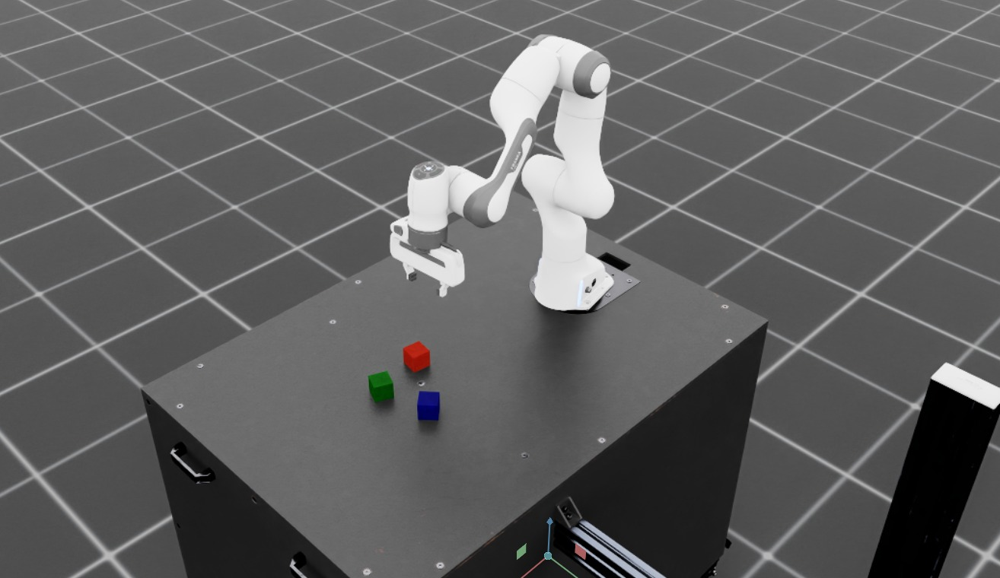

负例：Isaac Lab Stack 不等于官方调好的PPO

仿真任务场景v2.3.0 Isaac-Stack-Cube-Franka-v0注册只有env config，没有PPO配置；IK-Rel注册的是robomimic BC。环境rewards=None，有cubes_stacked成功终止。该版本适合示范/模仿学习工作流，不应因它位于Isaac Lab就声称已提供Stack PPO reward或使用其他任务PPO参数补齐。源码 源码
这与旧IsaacGymEnvs的FrankaCubeStack是两个实现，必须分开统计。此卡未完整展开三层立方体成功函数，因此状态partial，无伪造PPO config。